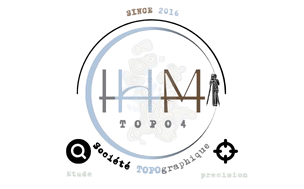

Al Haouz en Carte : Explorer l'Impact du Séisme sur les Bâtiments
Géoportail d'Al Haouz
Services
Analyse des Bâtiments
Cartographie Interactive
Statistiques Détaillées
Articles
À Propos de Nous
↑
☰ Voir l'état des bâtiments après le tremblement
Image 1
Image 2
Image 3
Image 4
Image 5
Image 6
Image 7
Image 8